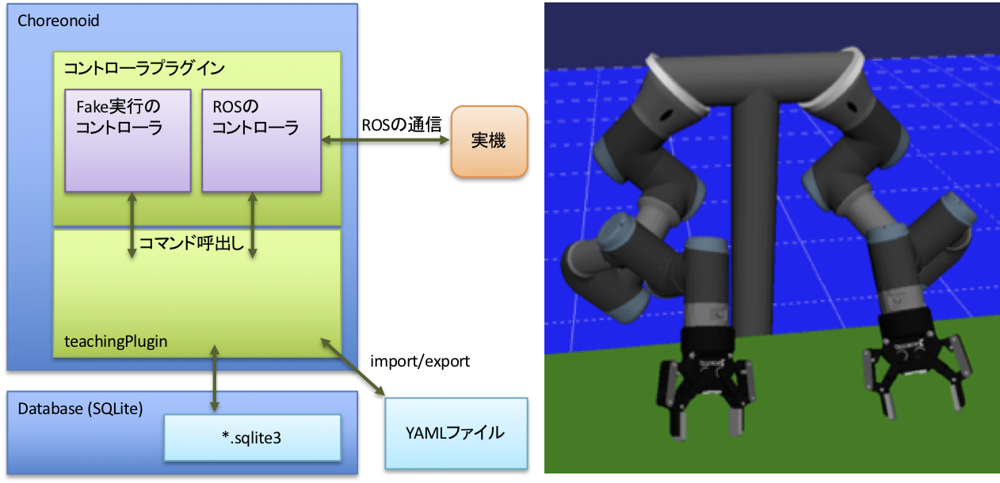

コントローラ

コントローラはteachingPlugin本体とは別にChoreonoidのプラグインとして実装します。
コントローラの実装方法
UR3を双腕構成にしたロボットを例として、その実装方法を説明します。
ソースコードの全体はUR3dualController.hとUR3dualController.cppを参照してください。
まず、コントローラはControllerFramework.hをインクルードし、teaching::Controllerクラスの子クラスとして実装します。
次にteachingPluginから呼出すためにstaticメソッドinstance()を用意します。
コマンドは内部クラスとして実装します。以下では腕を動かすコマンドMoveArmCommandのクラスを定義しています。
// UR3dualController.h #include "ControllerFramework.h" namespace teaching { class UR3dualController : public Controller { public: static UR3dualController* instance(); private: class MoveArmCommand : public Command { public: MoveArmCommand(UR3dualController* c) { c_ = c; } UR3dualController* c_; virtual bool operator()(std::vector<CompositeParamType>& params); }; ...
次にコマンドの実装を書きます。ここではteachingPlugin上でfake実行するコードを書きます。
コンストラクタからregisterCommands()メソッドを呼出し、registerCommands()の中でregisterCommand()を呼出しています。registerCommandはteachingPluginにこのコマンドを登録するとともに、その呼出し方（インタフェース）を知らせるものです。第一引数がコマンドの内部名、第二引数が表示名（GUI上で表示される名前でユーザが付け替えることが可能）です。第三引数に 返り値の型、第四引数のにコマンドに対する引数の名前と型を指定します。最後の引数がコマンドの実装インスタンスです。teachingPluginはこのルールにしたがって呼出しを行います。
// UR3dualController.cpp namespace teaching { UR3dualController* UR3dualController::instance() { static UR3dualController* controller = new UR3dualController(); return controller; } UR3dualController::UR3dualController() { registerCommands(); } ... void UR3dualController::registerCommands() { registerCommand("moveArm", "Arm", "boolean", {A("xyz", "double", 3), A("rpy", "double", 3), A("tm", "double", 1), A("armID", "int", 1)}, new MoveArmCommand(this)); // 0=left, 1=right ... }
次にmoveArmコマンドが呼出されたときの処理を書きます。最初にVariantとして渡された引数を目的の型として取出します。この部分はどのコマンドでも同様になります。後はコマンドごとの処理になります。ここでは関節角度を補間して再生しています。
bool UR3dualController::MoveArmCommand::operator()(std::vector<CompositeParamType>& params) { Vector3 xyz(boost::get<VectorX>(params[0])); Vector3 rpy_tmp(boost::get<VectorX>(params[1])); Vector3 rpy = toRad(rpy_tmp); double duration = boost::get<double>(params[2]); int armID = boost::get<int>(params[3]); printLog("moveArm(", xyz.transpose(), ", ", rpy.transpose(), ", ", duration, ", ", armID, ")"); BodyPtr body = c_->getRobotBody(); Link* base = body->rootLink(); Link* wrist = body->link(c_->getToolLinkName(armID)); JointPathPtr jointPath = getCustomJointPath(body, base, wrist); jointPath->calcForwardKinematics(); c_->ci.clear(); c_->ci.appendSample(0, wrist->p(), wrist->attitude()); c_->ci.appendSample(duration, xyz, rotFromRpy(rpy)); c_->ci.update(); return c_->executeCartesianMotion(wrist, jointPath); }
最後にChoreonoidのプラグインとするためのおまじないを行います。initiaizeメソッドはプラグインのロード時に実行され、その中のControllerManager::instance()->registController(...)でteachingPluginにコントローラを登録しています。
// SampleHiroControllerPlugin.cpp using namespace cnoid; using namespace teaching; class SampleHiroControllerPlugin : public Plugin { public: SampleHiroControllerPlugin() : Plugin("SampleHiroController") { require("Body"); require("Teaching"); } virtual bool initialize() { ControllerManager::instance()->registController("UR3dualController", UR3dualController::instance()); ... CNOID_IMPLEMENT_PLUGIN_ENTRY(SampleHiroControllerPlugin);
Note
サンプルコードでは複数のコントローラを1つのプラグイン内で実装していますが、別のプラグインとした方が筋が良いです。
Note
現在の実装では、teachingPluginは複数のコントローラが登録されていたとしても、設定ファイルで指定された1つのコントローラのみ使用します。
タスクは明示的に特定のロボットやコントローラへの依存性を記述しません。上記の説明からわかる通り、teachingPluginはフロー、タスク、コマンドの実行時に対象コマンドが選択されているコントローラで実装されているかどうかを実行前にチェックし、全て実装されていれば実行を行います。異なるコントローラで同じI/Fのコマンドが実装されていればそのタスクは実行可能です。ただし、期待した動作になるかどうかは実装に依存します。
ROSを使ったコントローラの実装
UR3の双腕構成ロボットを例にROSを使った実装について説明します。ここではcontrol_msgs::FollowJointTrajectoryActionを利用してROS対応の実機や外部シミュレータと通信を行います。UR3およびRobotiqグリッパのROSによるdriverは複数あるので、ここでは以下の2つを使用しています。
git clone -b iron-kinetic-devel https://github.com/iron-ox/ur_modern_drivergit clone https://github.com/beta-robots/robotiq
FollowTrajectoryControllerUR3Dual.hでコマンドMoveArmCommandのクラスを定義する箇所はfake実行の場合とほぼ同じです。FollowTrajectoryControllerUR3Dual.cppでregisterCommandを行う箇所、MoveArmCommandの実装で引数のVariantを解釈する箇所は同じです。
主な違いはMoveArmCommand::operator()の実装の中で、生成した軌道をROSのメッセージに詰めて送信した後、アームとグリッパの関節角度を受信しながら「シーン」ビューを更新する部分くらいになります。
trajectory_msgs::JointTrajectory traj; traj.header.stamp = ros::Time::now(); int nJoints = 1; traj.joint_names.push_back(gripperDriverJoint); for (double time = 0.0; time < duration+dt; time += dt) { if (time > duration) { time = duration; } VectorXd qRef; qRef = c_->jointInterpolator.interpolate(time); trajectory_msgs::JointTrajectoryPoint p; p.positions.resize(nJoints); p.velocities.resize(nJoints); for (int i = 0; i < nJoints; i++) { p.positions[i] = qRef[i]; p.velocities[i] = 0.0; } p.time_from_start = ros::Duration(time); traj.points.push_back(p); } control_msgs::FollowJointTrajectoryGoal goal; goal.trajectory = traj; traj_client->sendGoal(goal); while (!traj_client->getState().isDone()) { c_->syncWithReal(); }
Note
ROS(Kinetic)で動作確認しています。